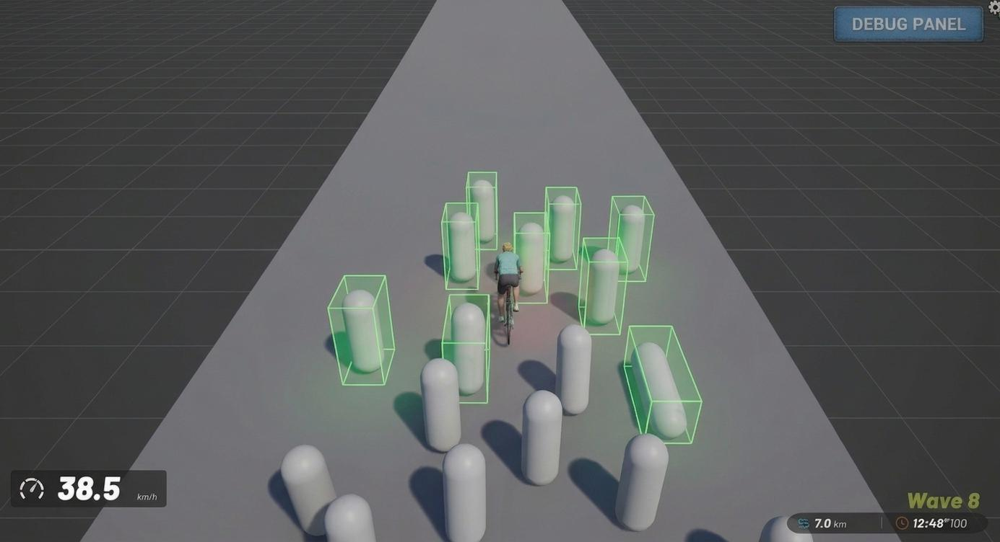
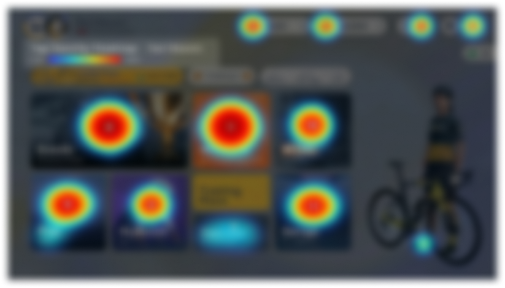
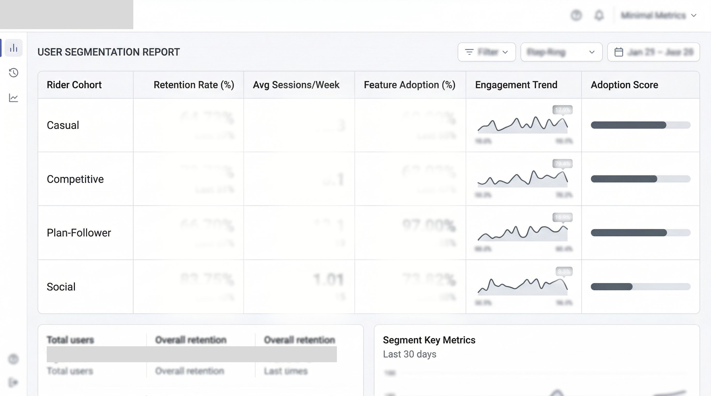
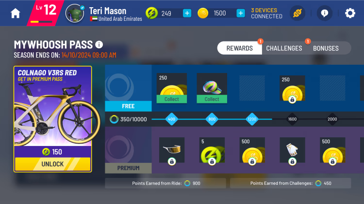

MyWhoosh
MyWhoosh is a premium, free-to-play indoor cycling application that blends gamification with realistic simulation. As the official virtual cycling partner for the UCI World Championships, it offers an unparalleled competitive platform worldwide.
Role
Senior Game Designer
Core Disciplines
Zombie Arcade & UCI Adaptations
The Pivot to Gamification
To retain casual riders who found pure simulation intimidating, I proposed and designed "Arcade Mode," a suite of physics-based mini-games. One standout release was "Zombies," where users performed HIIT workouts framed as desperate chases from zombie hordes.
The mechanic was simple but effective: speed equals safety. As waves progressed, the required speed increased.

Execution Strategy
Design & Mechanics
Defined the core loop (chased-by-horde survival), the wave-by-wave escalation curve, success/failure conditions, scoring model, and leaderboard submission.
UX Journey
Partnered with the UX team to map the end-to-end flow: mode discovery, pre-ride setup, in-ride HUD (distance-to-horde, wave indicator), catch/fail states, and summary screens.
Economy & Conditions
Determined points pacing, reward thresholds, and anti-exploit rules (e.g., preventing stalling and enforcing consistent effort windows) to keep play fair and motivating.
Prototype with Devs
Worked day-to-day with engineers to stand up a gameplay prototype. Iterated on readability and added quick debug hooks for wave speed, spawn rate, and scoring.
Greenlight to Production
Coordinated final assets, locked tuning, integrated performance constraints, and instrumented analytics events to support post-launch balancing.

UCI World Championship 2025 Adaptation
The "Zombies" concept proved so successful that the Director of E-sports commissioned me to adapt it for the 2025 UCI World Championships. I evolved the mechanic into a high-stakes Sci-Fi "Elimination Race" featuring high-tech drones, tailoring the aesthetic for a professional broadcast audience.

Zombie Arcade Trailer
UCI Esports Finals Stream
Establishing a Data-Driven Culture
The Challenge
The team lacked a unified approach to data-driven decision-making, which was spotted by our lead game designer. He then gave me the responsibility to bring in data pipelines for data-driven design.
Impact
We successfully mapped the First Time User Experience (FTUE) via Sankey diagrams, identifying critical drop-off points that were previously invisible.
query_statsMy Role
I led the transition to data-driven design, collaborating with the UX Lead to build the studio's first comprehensive design dashboard. Plus worked with project managers to create heatmaps on major screens.
Pipeline Ownership
Defined the KPI requirements and technical telemetry needed for every new feature, acting as the bridge between design, production, and engineering.
Process Improvement
Instituted monthly "Data Kickoffs" to review quantitative and qualitative metrics with feature owners, ensuring future iterations were grounded in reality.
Tools Used
SQL
Wrote custom queries to extract rider session data, cohort behaviors, and feature-adoption funnels
Google Analytics
Tracked acquisition channels and top-level FTUE conversion rates
Kibana
Visualized server-side logs to identify latency-related drop-offs during rides



Making the LiveOps Pipeline Better
The Challenge
Our game's LiveOps operation was hitting a wall. At roughly 10 events per month, every single event was a hand-crafted deployment:
Designer writes a spec doc → Engineer manually implements it → Manual QA pass → Deploy via build push or manual config upload.
The Results
My Role
Parameterized Templates
Decomposed all events into 12–15 parameterized templates so a designer/producer could configure scoring, rewards, tracks, targeting, and UI skin entirely through a config file.
Automated Validation Pipeline
Wrote all the checks for each parameter that could flag a broken event config. Every config passed through an automated gate that checked schema validity, ran economy simulations, detected schedule/UI-slot conflicts, and verified CDN asset availability.
Scheduling & Visualization
Created an in-house calendar tool for better visualization. Along with the Lead Producer, established standard rules for event scheduling.
Structuring Core Season Passes
The Goal
Own the architecture for the core progression systems,specifically the Season Pass and Challenges framework. The mission was to move beyond arbitrary point scaling toward a data-backed model that optimized exact effort-to-reward ratios.
Impact & Results
Implemented a highly cohort-responsive math model tailored directly against historical player velocities.
Real KPI Uplift: The math restructuring yielded a significant percentage increase in both Season Pass Completion Rate and Feature Adoption across consecutive quarters.
Execution
Progression Modeling
A/B tested separate Excel models (Static vs Linear) to determine which pacing reduced psychological fatigue while offering meaningful, attainable milestones.
Cohort Velocity Analysis
Built predictive systems mapping session frequency/length against XP output. Prototyped "XP Velocity" metrics to accurately forecast days-to-completion by user archtype.
Data Pipelines & Dashboards
Spearheaded the integration of unified telemetry. Collaborated with the UX Lead to design the first studio-wide data dashboards, running daily Heatmap and Sankey diagram queries on onboarding flow.



Solving "Offline" Disconnects in Esports
The Challenge
MyWhoosh operates as an MMO e-sport. A critical issue was handling connection drops during live competitive events. We needed to maintain competitive integrity while ensuring genuine players weren't unjustly punished.
The Solution
A custom "Offline UX" flow supported by an anti-cheat verification backend (the "WhooshPolice" drone), ensuring a highly resilient and fair esports environment.
wifi_offMethodology
Esports Competitive Analysis
Conducted comprehensive analysis of offline tech systems in major titles (CS:GO, Valorant, LoL). Mapped the hardware chain (Bike → Game → Internet) to pinpoint exact failure points.
Graceful Degradation Mechanics
Designed a journey where offline play is permitted but strategically limited. E.g., drafting (slipstreaming) privileges are immediately revoked in offline mode to remove competitive advantages without interrupting the physical effort.
UX & Telemetry Verification